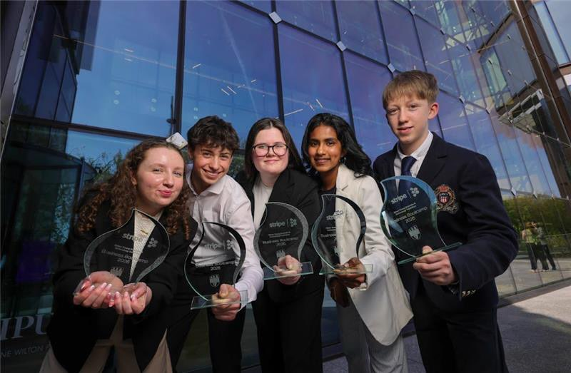

Motion sensor wristband
A Young Scientist 2023 project using an Arduino, PIR sensor, and buzzer to alert visually impaired users to oncoming vehicles through infrared movement detection and a wrist buzz.
Science projects, safety ideas, prototypes, awards, and the work that turned into Reforma.
Selected STEM work
A Young Scientist 2023 project using an Arduino, PIR sensor, and buzzer to alert visually impaired users to oncoming vehicles through infrared movement detection and a wrist buzz.
A Young Scientist project investigating nitinol as a material for car crumple zones, with the aim of making repairs safer, cheaper, and less wasteful.
A team business concept developed from the crumple-zone project during Stripe Young Scientist Business Bootcamp, winning the inaugural bootcamp.
Stripe Young Scientist Business Bootcamp
